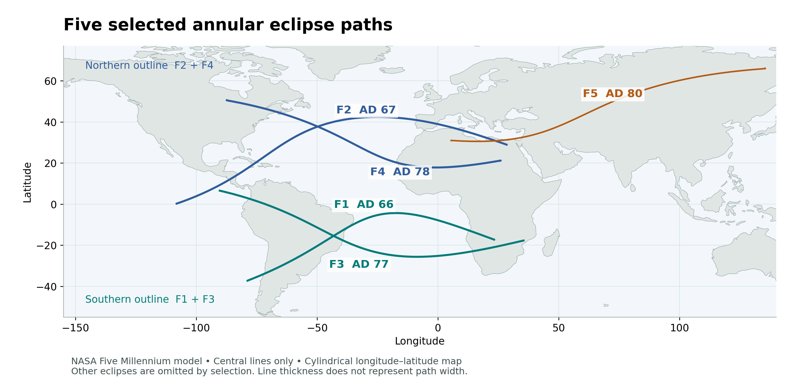
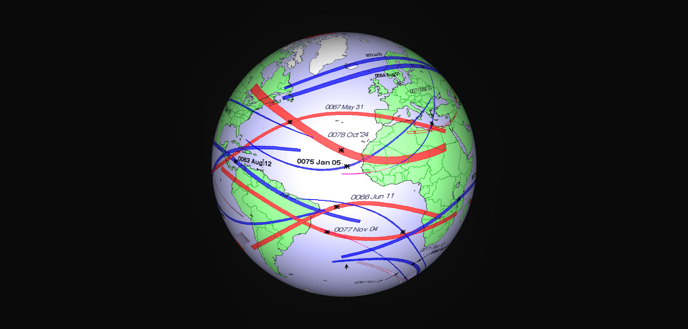
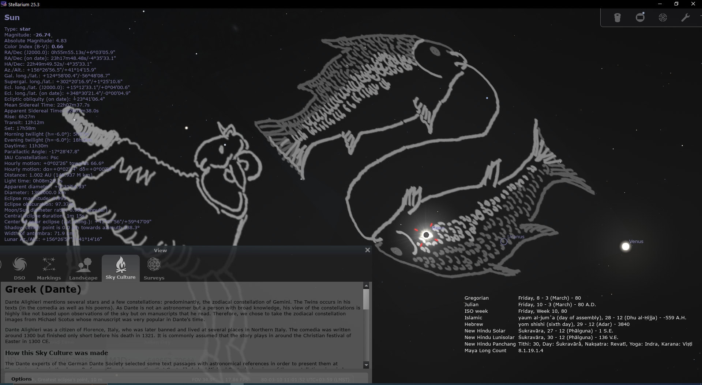
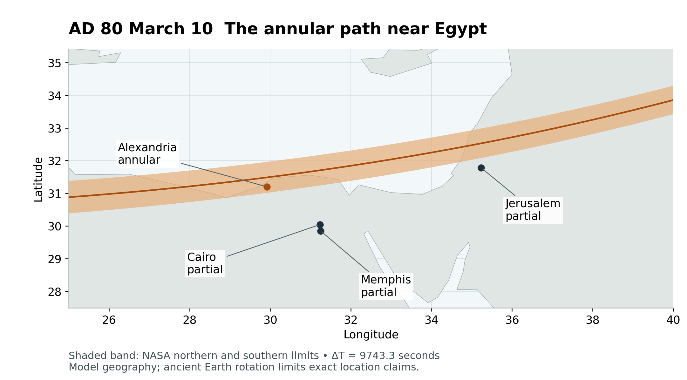
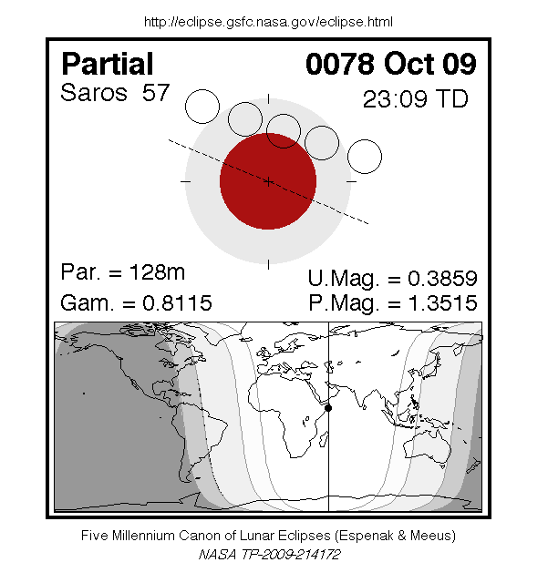

The Fish and the Nations
Book 2 · Celestial Signs of the First Advent · Chapter 14
The risen Christ and the gathering beyond Jerusalem
John ends his Gospel with the risen Jesus beside the sea and a net full of fish. The disciples have worked through the night without catching anything. Jesus tells them where to cast. Peter then brings the catch ashore:
So Simon Peter went aboard and dragged the net ashore. It was full of large fish, 153, but even with so many, the net was not torn.
John 21:11 BSB [1]
The number belongs to the account. So does the person directing the catch. Jesus had called fishermen to follow Him, and His resurrection carries that calling forward. This gives us a place to begin when we look at the five annular eclipses between AD 66 and AD 80. In their paths I see two fish and a line reaching eastward. In their timing I find a division of 153 lunar cycles followed by 17 more. I read those features alongside the Gospel’s gathering of people under the risen Christ.
The previous chapter followed Jerusalem toward its destruction. Here the view widens across the earth. Two of the eclipses precede the fall of the Temple in AD 70; three follow it. The sequence therefore continues beyond the war and ends in AD 80. That extension matters. The Temple’s destruction did not bring Christ’s work among the nations to an end.
Five eclipses across the earth
The five events are listed below. All dates in this chapter use the Julian calendar. The constellation column names the modern IAU region containing the Sun at greatest eclipse; the Moon occupies the same region in each case. The widths are NASA’s path widths at greatest eclipse, rather than maximum widths anywhere along each track.[2]
| Eclipse | Julian date | IAU region | Width at greatest |
|---|---|---|---|
| F1 | June 11 AD 66 · Wednesday | Gemini | 216 km |
| F2 | May 31 AD 67 · Sunday | Gemini | 146 km |
| F3 | November 4 AD 77 · Tuesday | Ophiuchus | 211 km |
| F4 | October 24 AD 78 · Saturday | Libra | 386 km |
| F5 | March 10 AD 80 · Friday | Pisces | 72 km |
These are selected eclipses within a longer catalogue. Other solar eclipses occurred during these years, and other paths appear in the supplied atlas views. The new map isolates the five paths used in this reading so that the selection is visible. Its lines follow NASA’s published central-path coordinates; no connecting strokes have been added.[3]


The AD 67 and AD 78 tracks make the northern outline. The AD 66 and AD 77 tracks make the southern outline. In each pair the western crossing suggests a tail, while the separated eastern ends suggest an open mouth. The AD 80 path reaches eastward from North Africa through the eastern Mediterranean region toward Asia. I read that fifth stroke as the line or hook associated with the fish.
The fish are suggested by curves on a map. They do not have drawn fins, eyes, or every feature of a finished emblem. A map projection also affects how their shapes appear. The supplied globe view is useful here because it lets us see the paired curves on a round earth, with other eclipse tracks still present. Its red and blue bands belong to the older atlas presentation; they do not mean that every visible band is part of the five-event selection.[4]


The ordinary Christian fish emblem depicts a single fish. The proposal here is a pair of fish, with a further stroke read as a line. Pisces supplies a related pair in the sky. I am proposing a relationship between these pictures and the scriptural account of gathering people. A reader can inspect the paths before deciding how far to follow that interpretation.
These first-century outlines are the clearest fish forms I found in my personal review of eclipse maps from 3000 BC to AD 3000, alongside the ancient Aleph and Tav composition considered in Chapter 9. Related arrangements return, but their clarity varies. Recognizing them is a subjective visual judgment, and this is among the book’s most controversial claims. I invite readers to examine the full 6,000-year record and decide for themselves. Chapter 9 explains the wider comparison and its scale of about 1,803 years, or 100 Saros periods.
The geographical scale fits the book’s heavenly perspective. No person standing beside one sea could watch fourteen years of eclipse paths laid across the earth. The completed figure brings distant places and different years into one view. Heaven is not confined to what an observer in Jerusalem could recognize. That is part of the perspective from which I approach these signs.
Rings of light and the risen Christ
An annular eclipse occurs when the Moon passes in front of the Sun but appears too small to cover its disk completely. Along the central path, a bright rim remains around the Moon. The event is therefore different in appearance from a total eclipse, although people outside the narrow annular band see a partial phase.[5]
In the earlier sequence I read the total eclipses alongside the death of Christ. Here the remaining ring of sunlight invites a comparison with the risen Christ whom John sees in Revelation. His eyes are fiery and His face shines like the sun. The ring can suggest a crown or an eye surrounded by light. Those associations explain why I consider the annular character of these five events meaningful.[6]
The comparison concerns the appearance of the eclipse and the imagery of Scripture. The Sun itself remains luminous during both kinds of eclipse. I am not suggesting that its light literally dies and returns, or that John supplies an astronomical definition of a crown. The created event gives us an image through which to consider the One John describes.
There is also a difference of scale within this set. The final eclipse’s path was about 72 km wide at greatest eclipse, appreciably narrower there than the other four. That supports the visual distinction between broad fish outlines and a finer line. Path width changes along a track, so the comparison belongs to those stated locations rather than to a claim that every part of the fifth path is uniformly thin.
The witness in the Twins
The first two eclipses occur in Gemini. Chapter 13 introduced the comparison with witness under persecution, including the traditions concerning Peter and Paul. Their deaths are not dated by the eclipses. Neither does Gemini by itself identify the Two Witnesses of Revelation.
Acts supplies a more immediate textual connection. Paul makes his final sea passage on the way to Rome aboard an Alexandrian ship bearing the Twin Brothers as its figurehead. Luke includes that detail while describing the Gospel’s arrival at the imperial city. I see a fitting correspondence between that narrative setting and the paired Gemini eclipses at the opening of the Fish sequence.[7]
The connection gains substance from the two apostles’ callings. Peter’s final conversation with Jesus in John 21 includes both the command to care for His sheep and a statement about the death by which Peter would glorify God. Paul’s ministry carries the witness among the nations. Their lives and deaths belong to the earthly history through which the risen Christ gathers people. The celestial comparison lets us consider that history from above without pretending to recover the day of either man’s martyrdom.
The Serpent Bearer and the Scales
On November 4 AD 77, the Sun and Moon are in Ophiuchus, the Serpent Bearer, under modern constellation boundaries. The event should therefore not be listed as an eclipse in Libra or Scorpius. The October 24 AD 78 eclipse is in Libra, the Scales.[8]
This distinction leaves room for both images in the interpretation. The first draws attention to the figure associated with the serpent; the second brings the balance into view. I read the movement in relation to the defeat of evil and the weighing of earthly powers. The eclipse calculations establish the stellar locations. The relation to judgment comes from the scriptural reading developed throughout the book.
Egypt enters the discussion through the maps and through John’s language. Revelation 11:8 gives the city where the Lord was crucified the spiritual names Sodom and Egypt. John can describe an earthly place by what it has come to represent. That is why the relation between Jerusalem and Egypt matters here. It does not require every eclipse path in the discussion to pass centrally over both cities.[9]
In particular, the October AD 78 eclipse gives Alexandria and Cairo a partial phase near sunset in the declared model. An observer there should not be placed inside an annular ring merely because the event was annular elsewhere. The distinction becomes especially important when we reach the final eclipse.
The line in Pisces
The fifth eclipse occurs on March 10 AD 80 with the Sun and Moon in Pisces. The supplied sky view shows the eclipse at the southern fish in one illustrated representation of the constellation. Its artwork belongs to the software’s Greek Dante sky culture. It helps explain the picture I am reading; it is not a recovered first-century drawing or a scene observed from Jerusalem.[10]


I associate the two fish with the divided people of Israel and Judah, and the southern fish with Judah. These are the symbolic associations used in this book. Their importance here is that the line leads back to the Fisher. Jesus called men beside Galilee and sent them out to gather others. His authority over the catch remains visible after His resurrection.
Matthew gives another fishing scene in which a single hook serves two people:
“But so that we may not offend them, go to the sea, cast a hook, and take the first fish you catch. When you open its mouth, you will find a four-drachma coin. Take it and give it to them for My tax and yours.”
Matthew 17:27 BSB [11]
Jesus directs Peter to the fish, and the coin pays for both of them. I read the final narrow stroke with that scene in mind. The relationship is between the shape proposed on the map, the single hook in Matthew, and the Fisher who provides. Matthew does not date the eclipse or describe its route.
The route itself must be stated accurately. In NASA’s published model, Jerusalem receives a deep partial eclipse, while Alexandria lies within the annular band. Cairo and the Memphis proxy are partial too. NASA’s local calculation gives about 96.2% of the solar disk covered at Jerusalem’s maximum; the separate Swiss DE431 calculation gives a closely comparable result under the same published Earth-rotation assumption. Those figures describe a model, not the recovery of an exact ancient observation.[12]


The line therefore reaches the region in which the Gospel’s earthly history began, but I do not describe a central ring passing directly over Jerusalem. Changes in the assumed difference between astronomical time and Earth’s rotation move an ancient eclipse path across the map. The caption states the model used here, so the geographical claim can be checked.
A partial eclipse at Jerusalem still belongs to the heavenly event. Its significance does not depend on the city’s inhabitants seeing a complete ring. The distinction concerns what an observer would have seen, and precision on that point helps us keep the broader interpretation honest.
The count of 153 and the additional 17
The lunar-cycle count is one of the clearest numerical features of the sequence. NASA assigns each eclipse a lunation number, identifying its place in the succession of new Moons. Subtracting those indices gives the following divisions:[13]
| Span | Lunar cycles | Interval between published eclipse maxima |
|---|---|---|
| F1 to F4 | 153 | 4517.999 days · about 4518 |
| F4 to F5 | 17 | 502.712 days · about 503 |
| F1 to F5 | 170 | 5020.711 days · about 5021 |
The cycle counts are integers because they count successive lunations. Their lengths vary, and the eclipses do not occur at an identical point in each new-Moon passage. The elapsed times are consequently not obtained by assigning a fixed whole number of days to every lunar month. The table gives useful decimals from NASA’s published greatest-eclipse times in astronomical time, followed by their approximate day values.
The four paths read as the fish extend from F1 to F4, a span of 153 lunar cycles. The final stroke adds 17. John counts 153 fish; the map sequence places that number before its final division. There is a simple arithmetic relationship within the numbers themselves: 153 = 1 + 2 + 3 + … + 17 = 9 × 17. Adding the final 17 gives 170, of which 17 is one tenth.
I read the tenth as a possible offering or harvest association alongside the Temple-tax story. The tenth is exact as a share of the cycle count. It is not a claim that the final elapsed interval occupies exactly one tenth of the elapsed days, and Matthew does not call the coin in the fish’s mouth a tithe. The passages contribute related imagery without becoming interchangeable.
The earlier day count of 77 × 153 also deserves to remain visible. Book 1’s authorized chart places 11,781 days between the opening midnight of January 1 AD 1 and the closing midnight after April 3 AD 33. The sacrifice falls within the final day of that span.[14]

A second use of the same product appears in the proposed bridge from the final Alpha eclipse. Counting March 9 AD 34 through June 9 AD 66 inclusively gives 11,781 dated days. June 9 is two days before the actual Fish opener on June 11. The elapsed midnight-to-midnight interval to June 9 is 11,780 days; the elapsed interval to the eclipse date is 11,782. Naming the endpoint and the counting rule keeps this comparison distinct from Book 1’s midnight interval. Any identification of June 9 with an Ascension anniversary also depends on the reconstructed festival calendar.[15]
The two eclipse sequences close 46 calendar years apart with a one-day date shift, from March 9 AD 34 to March 10 AD 80. Their civil-date separation is 16,803 days. From the preferred Passion date of April 3 AD 33 to the Fish ending is 17,143 days. These are the spans the stated dates produce.[16]
A harvest moon within the sequence
Fifteen days before the fourth solar eclipse, a partial lunar eclipse occurred on October 9 AD 78. NASA’s catalogue gives it an umbral magnitude of about 0.386. It was a partial entry into Earth’s dark shadow, rather than a total eclipse of the Moon. The published model places greatest eclipse at about 20:26 UT, or 22:47 in Jerusalem local mean time. The Moon was well above Jerusalem’s horizon.[17]


The proposed connection with Tabernacles requires a stated calendar. The preceding astronomical conjunction falls late on September 24, after sunset at Jerusalem. If the first evening after conjunction, September 25, opens Tishri 1, then sunset on October 9 opens Tishri 15. That construction places the eclipse on the first night of Tabernacles. It does not establish that a Jerusalem authority actually proclaimed the month on September 25. A calendar requiring an observed crescent can move the opening evening and change the festival date.[18]
With that qualification in place, the harvest association remains worth considering. Tabernacles gathers the agricultural year into the memory of God’s dwelling with His people. Revelation carries that dwelling forward into the new creation. The relation concerns the purpose of the gathering as well as its season: the people drawn to Christ are brought into life with God.
The wider year comparison also survives at its proper scale. From the autumn of 3 BC to the autumn of AD 78 is about 80 years; from the spring of 1 BC to the spring of AD 80 is likewise about 80 years. These compare the earlier celestial and received-chronology frameworks separately. Both reckon without a year zero, and their ending years are AD 78 and AD 80. They are seasonal correspondences with the forty-plus-forty motif, rather than two newly established dates for Christ’s conception or two exact astronomical intervals.[19]
The month at the ending
The Pisces ending can be read alongside the first month, but the calendar rule needs care. The March AD 80 conjunction occurs on March 10. The spring equinox follows on March 22, and the full Moon on March 24. The conjunction therefore precedes the equinox by nearly twelve days. It is not a new Moon just after the equinox.[20]
For the comparison in this chapter, I call this the Nisan lunation under a rule that places Passover after the equinox, and I use the first evening after conjunction for its schematic opening. A rule requiring the new Moon itself to occur at or after the equinox instead begins Nisan with the following lunation in April and assigns the March lunation to Adar. The month name follows the declared rule; the desire for matching endings cannot decide it.
The final Alpha eclipse in AD 34 and this final Fish eclipse in AD 80 both occur in Pisces. Their shared stellar setting is independent of which of those month rules is adopted. The Nisan comparison adds a festival reading within the stated calendar framework.
The gathering continues
The earthly history in these chapters includes the killing of witnesses and the destruction of Jerusalem. The Gospel carries us beyond those events. John shows the risen Jesus on the shore, directing men who had caught nothing and receiving a catch whose number he records. The Lord who knows the fish also knows the people His servants are sent to gather.
That is the reading I bring to the paired paths, the final line, and the 153 lunar cycles. The Gospel gives the picture its subject. The heavens give us another scale on which to consider His work. We can acknowledge where the maps depend on projection and where a festival date depends on a calendar rule while still asking what the completed arrangement may communicate to heaven.
The AD 80 ending leaves the witness moving outward among the nations. Jerusalem remains essential to the account, and the earth is larger than Jerusalem. The next chapter brings these paths together with the earlier eclipse sequences at the Exodus, the Conquest, and Christ’s ministry. That wider comparison will let us see which relationships persist when the whole set is placed before us.
Source notes
1. John 21:1–19 BSB, especially verse 11. The current BSB text prints the count as “153.” Matthew 4:18–22 supplies the calling of the fishermen. John supplies no eclipse date in this passage. Return
2. NASA Five Millennium solar eclipse catalogue AD 1–100, entries 04939, 04941, 04966, 04968 and 04972. All five are annular. IAU membership was checked using Swiss DE431 J2000 equatorial Sun and Moon positions at NASA’s published greatest-eclipse TD instants, with Astronomy Engine used for boundary lookup only. Ophiuchus is the result for F3 in both explicit ephemeris comparisons. Detailed dates, indices and inputs accompany the publication files. Return
3. NASA’s published northern, central and southern coordinate sets were retrieved through its eclipse map pages, including the AD 80 map. The new overview plots only the five central lines on a longitude–latitude projection, with no interpolated connections between different eclipses. Curves share the NASA catalogue’s Earth-rotation model. Natural Earth supplies the public-domain land outlines. The five events are a selected subset. Return
4. Supplied original IMG0433, “Two Large Fish Sign drawn by Ring Annualar solar 4 eclipses.png.” The original pixels and labels are retained. Its older atlas model and globe view illustrate the proposed paired outlines; current local claims use the separately identified numerical model. The additional supplied darkened overlay IMG0208 is retained as an optional reference in the posting package, rather than treated as an independent calculation. Return
5. NASA’s catalogue introduction and eclipse-type definitions. The bright ring is visible only within the annular band, subject to the local horizon and atmosphere. Return
6. Revelation 1:14–16, 2:18–23 and 19:12. The ring, fiery-eye and crown associations are the author’s interpretation. See the verified BSB Revelation 1 text. Return
7. Acts 28:11; John 21:18–19. The Twin Brothers are a ship’s figurehead in Luke’s narrative. Its inclusion permits the literary comparison developed here; it establishes neither an apostolic martyrdom date nor an identification of Revelation’s Two Witnesses. The historical distinctions in Chapter 13 remain in force. Return
8. F3 is Ophiuchus and F4 Libra under modern IAU boundaries, rather than two Libra eclipses. Illustrated constellation figures and modern regional boundaries answer different questions. The source’s Serpent Bearer association can be discussed without listing an incorrect modern region. Return
9. Revelation 11:8. For F4’s low-horizon partial phases at Alexandria and Cairo, the declared Swiss calculation and NASA local circumstances are included. NASA’s geometric local maximum occurs after sunset there; its full-event percentage should not be quoted as the visible percentage at sunset. Return
10. Supplied original IMG0185, “80AD Annular eclipse thin ring at Jerusalem Friday using Greek Dante syle similar to Christian Fish symbol.png.” Despite its filename, its displayed observer is the software’s greatest-eclipse point, not Jerusalem. Its clock, JD, percentage and illustrated art are preserved as source settings, not adopted as fresh precise local measurements. The figure serves the Pisces imagery. The independent IAU check confirms Pisces. Return
11. Matthew 17:24–27 BSB. The quoted verse omits the superscript footnote marker, not any words. The coin meets both Temple-tax obligations; the verse does not call it a tithe. Return
12. NASA AD 80 Besselian elements, ΔT 9743.3 seconds, and the same map page’s published local-circumstances algorithm. At Jerusalem 31.778° N, 35.235° E, that algorithm returns partial, 96.19% covered; Alexandria is annular, Cairo and Memphis partial. Swiss DE431 with catalogue ΔT rounded to 9743 seconds gives Jerusalem 96.22% and confirms those four local types. Surface height differs between the two implementations. Extra digits document model agreement, not ancient observational accuracy. Earlier wording assigning annularity to Cairo/Memphis and an older 94.9% Jerusalem figure is superseded for this declared model. Return
13. NASA lunation indices: F1 −23915, F2 −23903, F3 −23774, F4 −23762, F5 −23745. Thus F1→F4 = 153 and F4→F5 = 17. Published greatest-TD instants give 4517.998854 and 502.712454 days respectively. Civil-date subtraction for F1→F4 gives exactly 4518 days. The earlier 4517-day physical interval is not reproduced. The factorization is 153 = 9 × 17; the raw expression 17 × 3 × 3 × 3 would equal 459. Return
14. Supplied authorized Book 1 chart IMG0016, “153×77 fish chart.png,” retained unchanged. Its midnight interval is January 1 AD 1 at 00:00 through April 4 AD 33 at 00:00, 11,781 days. It uses the received chronology of the era and circumcision discussed in Book 1; it does not replace the primary historical birth framework. The sacrifice lies within its final day. Return
15. Julian JDNs at noon: March 9 AD 34 = 1733544; June 9 AD 66 = 1745324; June 11 AD 66 = 1745326. Subtraction gives 11,780 and 11,782 elapsed days. Adding one for inclusive dated days makes the June 9 construction 11,781 = 77 × 153. Neither eclipse-to-eclipse elapsed time nor exact eclipse maxima are that product. The Ascension-anniversary label remains conditional. Return
16. March 10 AD 80 has JDN 1750347; April 3 AD 33 has JDN 1733204. Their civil-date difference is 17,143, rather than 17,136. The raw section’s gcd(17,136, 28,917) = 1,071 is arithmetically true for those integers, but the first span is incorrect and the second endpoint is unspecified. Replacing the first with 17,143 gives gcd 7. The claimed 1,071-day governing unit is therefore not used. March 9 AD 34→March 10 AD 80 is 16,803 days. Return
17. NASA lunar eclipse catalogue AD 1–100, entry 05020, and its October AD 78 diagram. Greatest eclipse 23:08:40 TD minus ΔT 9757 seconds gives 20:26:03 UT. Jerusalem local mean time adds 2h 20m 56s. The independent Swiss check places the Moon about 60.7° above the geometric horizon. Umbral magnitude 0.3859 measures shadow penetration relative to lunar diameter, not the fraction of the Moon’s area eclipsed. No exact witnessed colour is inferred. Return

18. Swiss DE431 gives the September conjunction at about 19:19 UT on September 24 AD 78, after sunset in Jerusalem. Opening the month on the next evening, September 25, makes October 9 after sunset day 15 by ordinary evening counting. At September 25 sunset the young Moon is only about 2.5° above the geometric horizon in the declared calculation; that is no basis for asserting a securely observed first crescent. The first-evening-after-conjunction rule is schematic and is stated as such. No historical month proclamation has been supplied. Revelation 21:3 supplies the dwelling-with-humanity connection. Return
19. Civil BC/AD has no year zero: corresponding seasons of 3 BC→AD 78 and 1 BC→AD 80 are each 80 calendar years apart when like points in the year are compared. The earlier birth chapters distinguish historical, celestial and received-era frameworks. The comparisons here preserve those distinctions and establish no exact conception-to-eclipse duration. Return
20. Declared Swiss DE431 calculation: March conjunction about March 10, 07:06 UT; equinox March 22, 01:13 UT; full Moon March 24, 05:41 UT; following conjunction April 8, 18:28 UT, all Julian AD 80. UT conversion here uses NASA’s −500 to +500 polynomial ΔT, separately from the fixed catalogue ΔT used for local eclipse comparisons. Conjunction and first-crescent dates are distinct. Canon File 12 Calendrical Physics and File 13 Christological Matrix remain controlling for the book’s declared calendars and chronology. No historical Jewish intercalation decision is recovered by this calculation. Return
Scripture quotations are from the Berean Standard Bible. Eclipse predictions by Fred Espenak, NASA’s GSFC. Supplied illustrations remain credited to their original sources; the interpretation is the author’s.
← Previous: Chapter 13 — Jerusalem and the Sword in the Sky
Book 2 contents
Next: Chapter 15 — One Witness across the Ages →